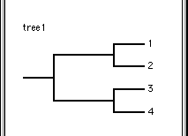

RadCon is a program for manipulating and analysing sets of phylogenetic trees. Each set of trees in memory is associated with a Trees window which allows the user to view the trees. Although there is only one type of Trees window RadCon actually recognises two types of tree - source trees and consensus trees - which have very different properties. RadCon also allows the user to select a subset of trees on which to perform a number of commands.
A set of trees are read into RadCon as a set of source trees. A source tree is considered to represent an inferred evolutionary history. These histories can be manipulated in various ways using the commands in the top half of the Source menu. Consensus trees are very different from source trees - they represent sets of source trees as opposed to inferred patterns of evolution. A set of consensus trees (which often consists of a single tree) is created when a consensus method is applied to a set of source trees. Manipulation of consensus trees is not permitted as altering a consensus tree means it no longer correctly represents the set of source trees. For example the Adams consensus tree is only defined for a set of rooted source trees. An unrooted Adams consensus tree is a nonsense. A set of consensus trees can however, like a set of source trees, be printed and saved and various tree measures calculated. The commands that can be applied to both source and consensus trees are grouped in the Trees menu. If the user wishes to manipulate a set of consensus trees they should save them to file and then read them back in as a set of source trees.
|  |
RadCon allows the user to select a subset of trees for various menu commands, including saving, printing and analysis (if the trees are source trees) to operate on. It should be noted that commands which manipulate a set of source trees (note: consensus trees cannot be manipulated) operate on the complete set of source trees irrespective of whether they are selected or deselected and active or inactive. By default all trees are read in as selected.
The subset of trees selected can be set using the commands in the submenu of the Select Trees Trees menu command. Alternatively each individual tree can be selected or deselected using the the Select button on the Trees window toolbar.The user can determine the trees which are selected using the Trees command (in the submenu of the Information command in the Trees menu) which writes to the Log window the numbers of the selected trees.
In addition, a tree is drawn blackened or grayed, in the Trees window, if it is selected or deselected, respectively.
In order for a rooted or unrooted tree to be informative it must contain at least 3 or 4 leaves, respectively.
Although RadCon checks each tree as it is input to ensure it is informative the relaxation of the requirement that trees in the same set have identical leaves (a requirement of many tree programs) introduces the possibility of tree manipulation rendering a subset of trees uninformative. For example consider two rooted source trees with 3 and 4 leaves, respectively. Unrooting this set causes the tree with 3 leaves to become uninformative. RadCon handles this problem by 'inactivating' uninformative trees. An inactive tree is retained in memory but excluded from the set of trees to prevent it having any sort of influence. If subsequent manipulations render it informative again it is reinstated in the set of source trees in its original position. In addition, it is inserted in exactly the same position in the set and if prior to inactivation it was selected then it is added to the set of selected trees. Note: because consensus trees cannot be manipulated inactivation is a phenomenon confined to source trees.
The user can determine which trees are active using the Trees command (in the submenu of the Information command in the Trees menu) which writes to the Log window the numbers of the active trees.
Go to the Table of Contents.
This page is maintained by joe@poissonconsulting.ca
© Copyright 1999, 2000, 2001, Joseph L. Thorley and Mark Wilkinson. All rights reserved.